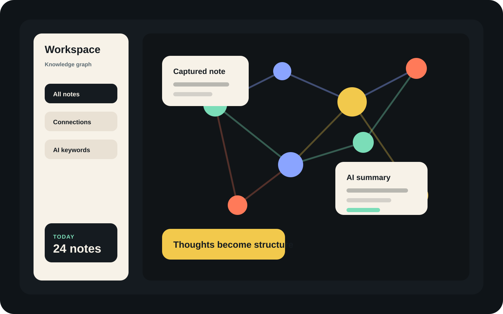

LinkMind
흩어진 노트를 연결 가능한 지식 구조로 바꾸고, 생각 사이의 맥락을 그래프로 탐색한다.
Figma Make로 디자인하고 Claude Code로 구현한 AI-native 지식 관리 앱. 캔버스 기반 노트 카드, D3 force 그래프, 디자인 토큰 시스템을 72시간 안에 프로덕션 배포.
Live ↗
개요
Solo Project
1인 + AI tools
✅ 기여도 100%
Period
2026.04
Tools
Figma Make
Claude Code
React+TypeScript
D3
Vercel
흩어진 노트, 보이지 않는 연결
아이디어는 선형적으로 쌓이지 않는다. 폴더 구조로는 맥락이 사라지고, 태그만으로는 관계가 보이지 않는다.
기존 노트 앱들이 놓친 것: 노트 사이의 관계 자체를 시각화하는 인터페이스. Idea driven by 안드레아 카파시 트윗
디자인 토큰부터 배포까지, 직접 설계한 시스템
Typography, Color, Layout Grid — CSS 변수 기반 디자인 토큰(theme.css)을 직접 정의하고 Tailwind @theme inline으로 연결. 컴포넌트 단위 분리(NodeCard, Sidebar, ConnectionLine 등)로 확장 가능한 구조 설계.
배경·텍스트·브랜드·노드 색상을 CSS 변수로 정의, 다크모드 기반 일관성 확보
NodeCard, Tag, Modal 등 재사용 컴포넌트로 분리, Props interface 타입 정의
Figma Make → Claude Code → Vercel 빌드 → 수정 & 재배포
Figma Make — UI 컴포넌트 시각화 및 디자인 시스템 초안
Claude Code — React+TypeScript 컴포넌트 변환 및 D3 그래프 구현
반복 — 브라우저에서 직접 확인하며 프롬프트 수정
Vercel — 프로덕션 배포 및 실제 URL 피드백
흩어진 노트가 연결되고, 질문을 통해 생각의 맥락이 드러난다.
Figma Make → React 앱 프로덕션 배포까지 1인 완료
NodeCard, Sidebar, GraphView 등 재사용 컴포넌트 수
LinkMind live deployment — 실제 배포 URL